Ticket Center: Analysis Request
End-to-end state, front end and back end, step by step · as of Tuesday Oct 20, 2026, 9:21 AM ET
Prepared by 4.0.0_SA_CRO~TCKT for Andrew's voice memo · project IRPT_ANLREQ (PRD v0.24)
Bottom line: the cleanup from your Oct 19 walk is live on PROD: no email, type or commentary fields, models at
first paint, staff never refused, and "Open report" shows the report. But a filing from the PROD page cannot reach a
report today. The page's own check refuses the new "commentary on" flag. The fix is approved and on DEV, but was not
on PROD at 9:21 AM. Beyond that, no ticket has yet received the four attachments: the two causes found in run 6
are fixed live but unproven. Run 7 (about 10:15 AM) is the first proof.
The journey in one line
1 Board→
2 New Ticket→
3 Form→
4 Upload check→
5 Ticket created→
6 Analysis submit→
7 Report id on ticket→
8 Report generated→
9 Commentary PDF→
10 Four attachments→
11 Open report
State of every step
| # | Step | Front end (PROD page) | Back end |
|---|
| 1 | Open Ticket Center | LIVE since 5:28 AM | LIVE |
| 2 | New Ticket, choose Analysis Request | LIVE defaults to Service Request | n/a |
| 3 | Fill the form | LIVE new form | LIVE firm list |
| 4 | Upload check ("Did you mean") | LIVE (offline-proved) | PROVEN run 6, staff never refused |
| 5 | Ticket created | LIVE | PROVEN run 6 |
| 6 | Analysis submitted | BROKEN ON PROD page refuses itself | PROVEN run 6 (API) |
| 7 | Report id saved on ticket | BLOCKED by step 6 | UNEXERCISED |
| 8 | Report generated (Opal producer) | n/a | PROVEN run 6, READY in ~30 s |
| 9 | Commentary drafted, then PDF | n/a | Draft PROVEN; PDF NEVER REACHED |
| 10 | Four attachments on the ticket | UNEXERCISED | FIXED, UNPROVEN run 7 |
| 11 | Open report / open files | LIVE report face proven (3 sections, not 425 cards) | LIVE |
| 12 | A failed step shows on the ticket | UNEXERCISED | UNEXERCISED |
| 13 | Emails to people | NONE BY DESIGN both email lists are empty |
How to read this document
- Screenshots are the real portal code, rendered on this machine with synthetic data (no client data, no
AWS calls). Two builds were used: "PROD today" = portal
f48e09dd, exactly what is live; "PROD +
fix" = e9ca1106, the approved submit fix that is waiting to be promoted.
- PROVEN = a live run left a receipt. UNEXERCISED = deployed, never run end to end. Runs 5 and 6 called the
APIs directly. No staff user has filed through the PROD page yet (0 analysis tickets since 5:28 AM).
- Each step ends with Questions for your memo: things I saw that look vestigial or unclear. They are not decided.
Steps 1-2 · Open the Ticket Center, press New Ticket
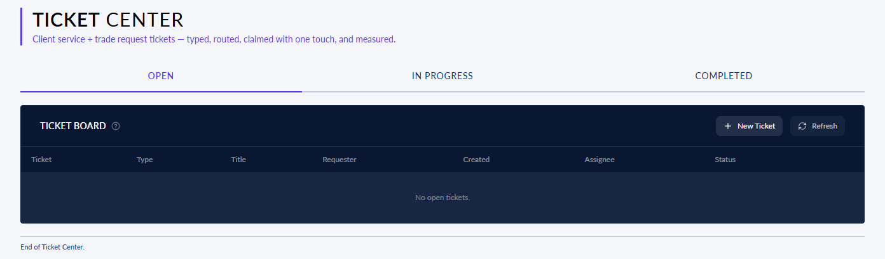
Step 1, PROD today: the Ticket Center with an empty board (Open / In Progress / Completed tabs).
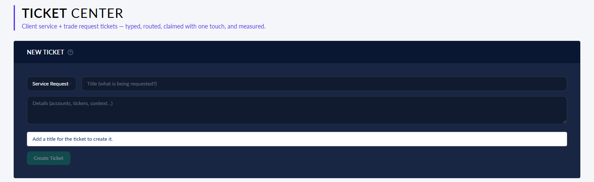
Step 2, PROD today: New Ticket opens as Service Request; the filer must switch the type to Analysis Request.
Front end
The page is shown to Opal staff only. Loading it reads the open tickets
and their counts. New Ticket opens a panel whose first control is the ticket type.
Back end
Ticket service Lambda
opal-ticket-api, table
opal-tickets, behind the portal API authorizer. Calls:
GET /tickets?status=open,
GET /tickets/metrics. Nothing starts an analysis here.
Questions for your memo
- Should "Analysis Request" be the default type for staff, or a separate button, given it is the main workflow?
Step 3 · Fill in the Analysis Request form
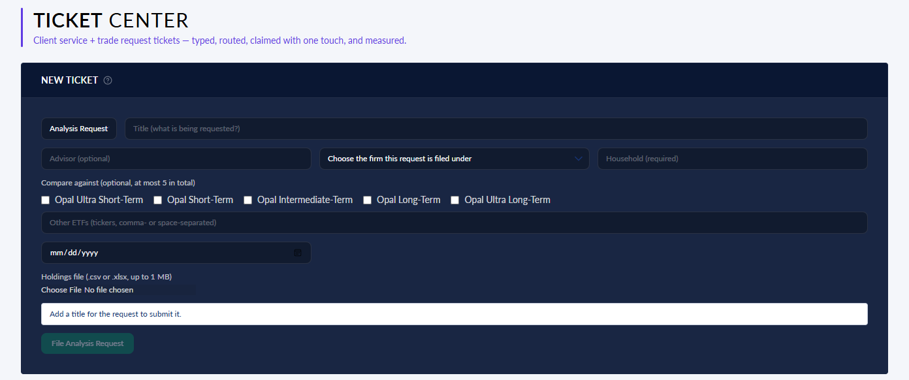
PROD today, empty: no report-type dropdown, no email field, no commentary box. The five Opal models are on screen at once. Submit is held until a title is given.
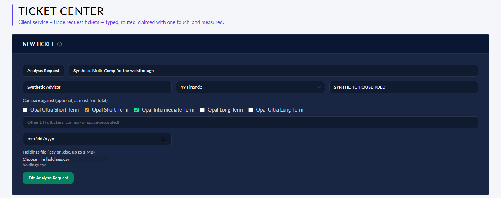
PROD today, filled: firm chosen (49 Financial), two Opal models checked (= Multi-Comp by count), holdings file attached; File Analysis Request is enabled.
Front end
Fields: Title, Advisor (optional), Firm, Household (required), Opal
model checkboxes (static list, larger text), Other ETFs, a date field, Holdings file. The report type is derived from
how many comparables are picked: 0 Overview, 1 Comparison, 2+ Multi-Comp.
Back end
Opening the form asks the directory service for the firms
(
POST /investor-reporting/directory/resolve). The models need
no call. The ETF catalogue is fetched
only when Other ETFs is typed.
Questions for your memo
- The date field (mm/dd/yyyy) has no visible label. It is "Needed by". Keep it, label it, or remove it? (Price dates were retired on Oct 15.)
- The Advisor name field is still there (optional). You removed the email; is the advisor name still wanted?
- The "Compare against" heading is still small; only the model names were enlarged.
- Household is required; Title is required. Is the title needed, or could it be derived (household + type)?
Step 4 · The upload check ("Did you mean")
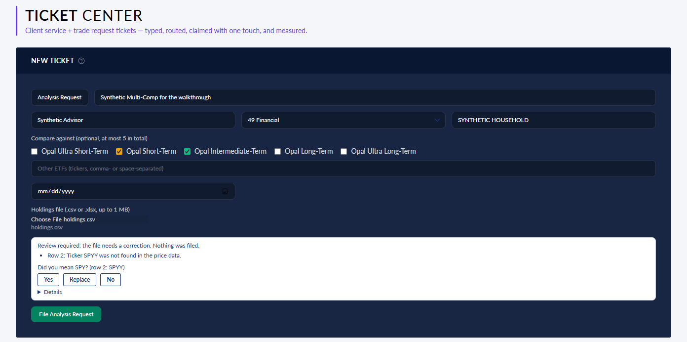
PROD today: a holdings row with an unknown ticker (SPYY) gets "Did you mean SPY?" with Yes / Replace / No. Nothing is filed until it is answered.
Front end
Pressing File Analysis Request first sends the holdings file. If a
ticker does not exist, the form shows the door's suggestion:
Yes accepts it,
Replace lets you type a
ticker (checked again),
No files it as-is with "Opal Staff will manage the replacement". A ticker that exists but
cannot be priced is filed without a prompt and replaced in the back end.
Back end
The "upload door", Lambda
irpt-ycharts-generate
(
intake/uploads.py). It checks every ticker against Yahoo first, then YCharts only for symbols Yahoo lacks.
It stores the original file and its normalized form under
irpt/<firm>/state/.
Staff are never refused for a missing advisor: the owner falls back to the signed-in staff user
(
served.py, release r37, live since 3:10 AM).
State
PROVEN through the API in run 6 (4:02 AM): an
unseeded staff user with no advisor uploaded and was accepted. The Yes/Replace/No prompt is proven only offline. The
"kept unknown ticker → back-end replacement" path has
never been run past this step.
Questions for your memo
- Is Yes / Replace / No the behavior you want, or should unknown tickers always go straight to Opal staff?
Steps 5-6 · Ticket created, then the analysis is submitted BROKEN ON PROD
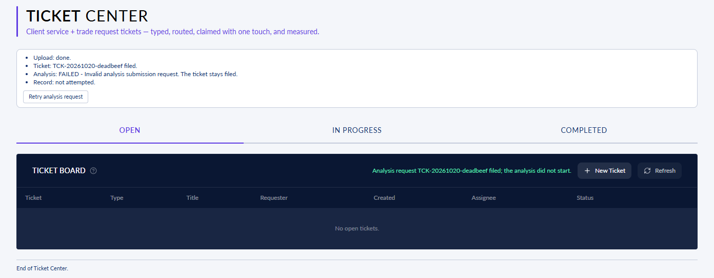
PROD today, after pressing File Analysis Request: "Upload: done. Ticket filed. Analysis: FAILED - Invalid analysis submission request. Record: not attempted."
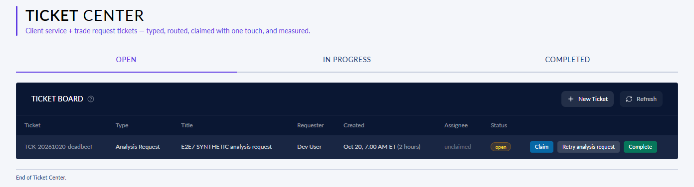
PROD today, the board afterwards: the ticket exists with no report. The row offers "Retry analysis request", which fails the same way.
Front end (what breaks)
The page makes four writes in order: upload →
create ticket →
submit analysis → save report id. Yesterday's cleanup made every request carry
"commentary on". The page's own pre-send check (
contracts/submission-request.ts) still rejects that field.
So the third write is never sent, and the ticket is left with no report.
Back end
Ticket service writes the ticket; routing names manav@ and alyssa@ as
the assignee pool; it starts open and unclaimed. The analysis service
accepts "commentary on" (fixed live in
r34m, 3:30 AM). The defect is
only on the page.
State and fix
Found by worker 323 at 7:28 AM (row IRPT_ANLREQ-D2-W323-S1). Fixed
in
e9ca1106 (a one-word change plus tests), CTO-approved 8:02 AM, promote order to the deploy seat cut 8:01 AM.
Not on PROD at 9:21 AM (PROD is still the 5:20 AM release). Until it lands, no one can file from the page.
Steps 6-7 · The same filing with the fix (what PROD will do once promoted)
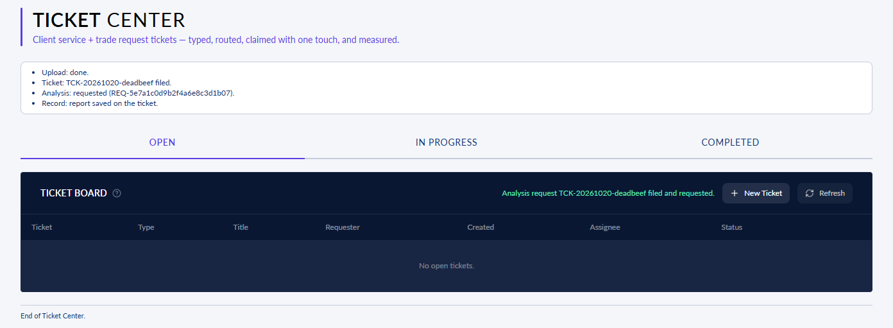
PROD + fix: "Upload: done. Ticket filed. Analysis: requested (REQ-...). Record: report saved on the ticket." (The empty board here is a limitation of the synthetic data, not a defect.)
Front end
All four writes happen, and the page reports each one. The form closes. The ticket row gets an
"Open report" button because the report id is now saved on it.
Back end
POST /investor-reporting/analysis →
submission.py derives the type from the comparable count (variant "auto"), records the request in
irpt-requests, stamps a staff filing
ticket_confirmed (this routes it to Opal's own report
builder; r37 fix) and queues it for the report host. Then
POST /tickets/{id}/report saves the id.
State
Submit:
PROVEN through the API in run 6 (REQ
accepted 4:02 AM). From the page: proven only offline on the fix build. Saving the report id:
UNEXERCISED live.
Questions for your memo
- After filing, there is no on-screen sign that the report is being built. Do you want a visible "generating / ready" status on the row?
Steps 8-9 · Back end: the report and the commentary (no screen)
Step 8 · Report generated PROVEN
- An always-on EC2 host (the "resident", release r34n since 6:58 AM) takes the request from the queue.
- It routes a staff filing to Opal's producer (not a YCharts report).
- It prices each holding in order: Opal's own stores → Yahoo (T-1) → YCharts, one symbol, price only →
a class-matched replacement (C-SWAP) → otherwise left out, and the report says so.
- It builds the report PDF, stores it, and marks the job READY.
- Run 6: READY in about 30 seconds.
Not yet read: the content of a staff Multi-Comp PDF since the fixes. On Oct 19 a Multi-Comp run made no comparison data calls.
Step 9 · Commentary drafted, then rendered as a PDF
- At READY the commentary drafter (the Kimi model) writes the investment commentary from the report's key figures. It
uses no client identity and is marked DRAFT.
- Draft: PROVEN (run 6, 4:04 AM).
- The host was not allowed to read the draft back. That was fixed live at 6:04 AM (IAM grant).
- Standalone commentary PDF: NEVER REACHED. Run 6 stopped at the attach step
before rendering it.
Questions for your memo
- What must the commentary cover for a Multi-Comp (portfolio vs each model)? It is drafted from the report, so a thin report gives thin commentary.
Step 10 · The four attachments land on the open ticket FIXED, UNPROVEN
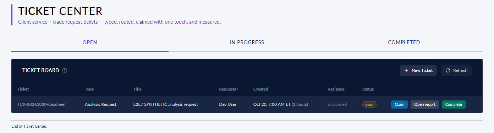
PROD + fix, while the back end works: the ticket is open and unclaimed, with "Open report", but no files yet.
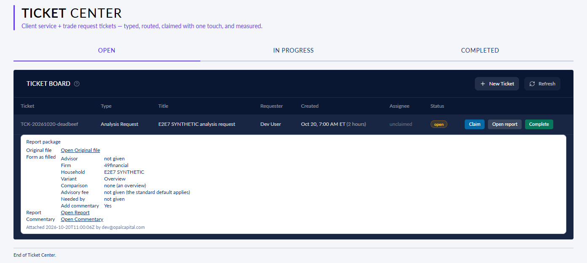
PROD + fix, the target end state: "Report package": Original file, Form as filled (a table), Open Report, Open Commentary.
Front end
The row expands into the report package. Each file opens through a
short-lived signed link. "Form as filled" prints the answers as a table.
Back end
The host's packager posts the file pointers to
POST /tickets/{id}/package as service account
svc-irpt-packager (allowed firms: 49financial,
cottonwood, inflection). Three files go at READY without waiting for commentary; the commentary PDF is added when it exists.
State
No real ticket has ever received a package. Run 6 failed here: the
attach was refused (403) because the packager called the API's direct address. Fixed live at 6:58 AM (it now goes
through the portal address; a probe was admitted). Run 7 at about 10:15 AM is the proof.
Questions for your memo
- "Form as filled" still prints Variant and Add commentary: Yes rows for fields the form no longer has. Remove them?
- Should the ticket move to In Progress or Completed automatically when the package lands? Today it stays Open and unclaimed.
Step 11 · Open report LIVE
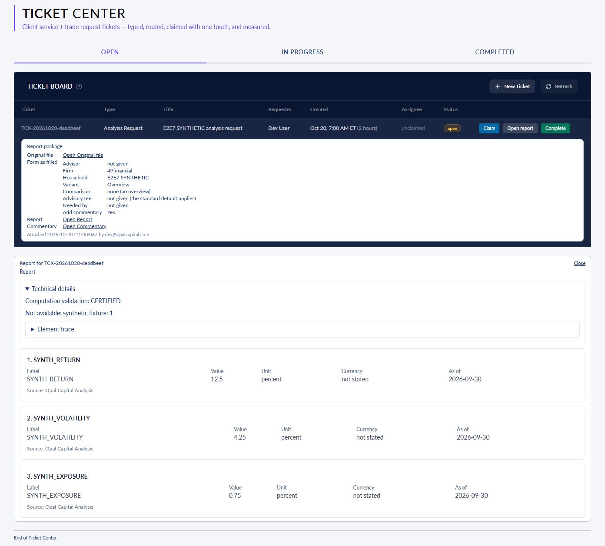
PROD + fix, synthetic report: the report's figures as cards (label, value, unit, as-of, source). "Technical details" (opened here) holds the validation and the element trace, which used to fill the screen with ~425 "not available" cards.
Front end
"Open report" shows the report's own sections in "report mode". The
internal trace is folded under Technical details.
Back end
GET /investor-reporting/analysis/{requestId}/sections
returns the retained sections from the generated report.
State
PROVEN on a real report (run 5D): 3 sections
(1 with a value) instead of about 425 cards.
Questions for your memo
- With the PDF attached, is an on-screen "Open report" of figure cards still wanted, or should it simply open the PDF?
- A real report showed only 1 of 3 sections with a value. What figures must a report show to be useful?
Steps 12-13 · Failures and emails; what is not proven
Step 12 · A failed step shows on the ticket UNEXERCISED
The ready signal, the commentary draft and the packager each record one failure on the job. The ticket row reads it and
shows, in fixed words, which step failed and what happens next. The message disappears once the package lands. No run
has yet driven a failure on purpose to see it on a ticket.
Step 13 · Emails NONE BY DESIGN
Nothing is emailed for an analysis request. The client notice list and the internal distribution list are both empty.
Nobody is told when a package lands.
Not yet proven
- A staff user filing through the PROD page end to end (blocked at step 6 until the fix is promoted).
- The four attachments on a real open ticket (run 7, about 10:15 AM).
- The standalone commentary PDF being rendered and attached.
- A kept unknown ticker being replaced in the back end (C-SWAP) and named in the report.
- A Multi-Comp report's comparison figures, read in the PDF.
- The failure display for a deliberately failed step.
- Another firm being refused the ticket and its files.
Open defects and owners
| Defect | Owner | State at 9:21 AM |
|---|
| Page refuses its own analysis submit ("commentary on" flag) | Deploy seat 0.4.0_DT_ClientPlatform~DELL2 (order TO-PROMOTE-GUARD); issuer 2.0.0_SA_COO~Y2 | Fixed on DEV (e9ca1106); not on PROD |
| No real ticket has ever received a package | 2.0.0_SA_COO~Y2; run by 0.7.0_AE_CloudOps~IB2 (run 7) | Both causes fixed live; unproven |
| "Variant" / "Add commentary" rows left in Form as filled | 2.0.0_SA_COO~Y2 | Open |
| Run 6 test objects could not be deleted (AccessDenied); 1 commentary message in the dead-letter queue | 0.7.0_AE_CloudOps~IB2 | Open |
What I need from your memo
- For each step: keep / change / remove, especially the questions in the amber boxes.
- What "done" looks like to you: I propose you file your own sample on PROD and open all four files on the ticket.
- Then I run
/closer-drive on IRPT_ANLREQ and work the list to that bar in one pass.
Sources: the backend trace (built from the IRPT_ANLREQ PRD v0.24, the COO's state file FWD_STATE_V024_20261020.md
v6, and the IB2 receipts for r37, r34m, r34n, the IAM grant, run 6 and the packager 403), the run 7 page notes of worker 323,
and the portal origin/PROD read at 13:21Z. The screenshots were rendered on dell2 from the portal builds f48e09dd and e9ca1106
with synthetic data.